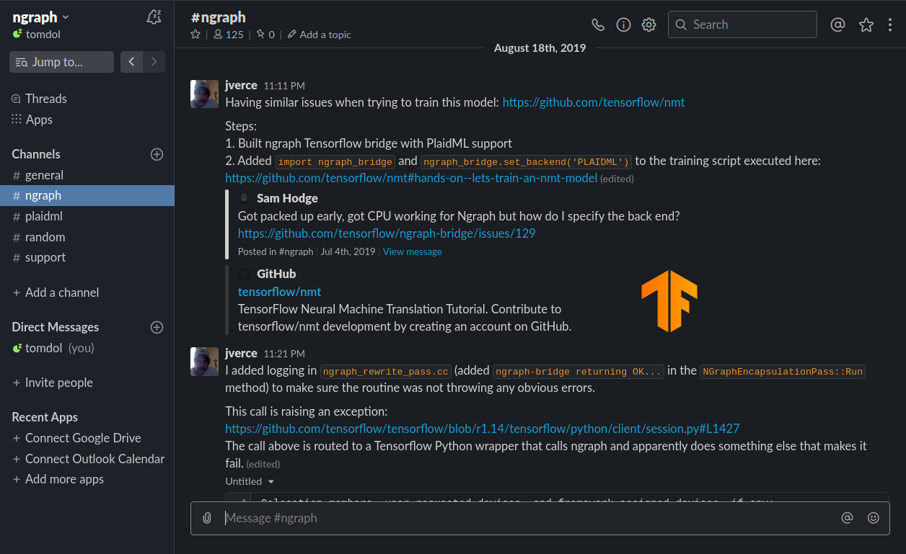
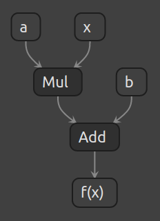
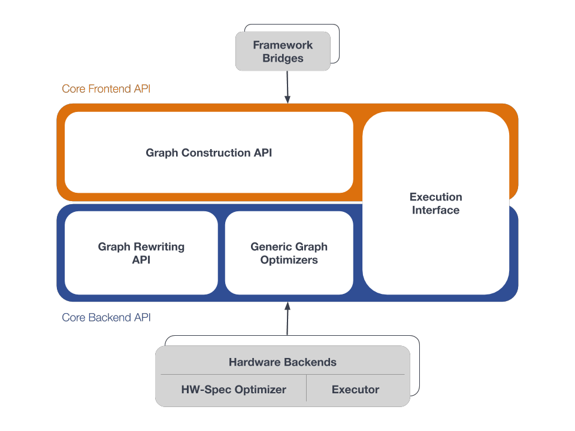
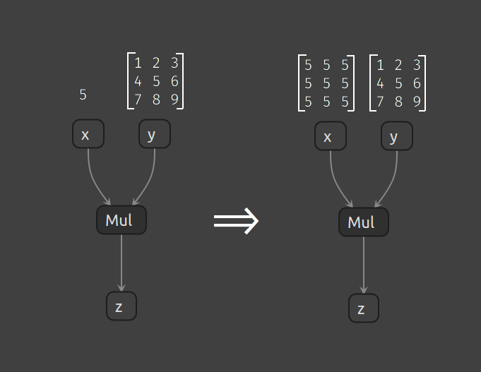
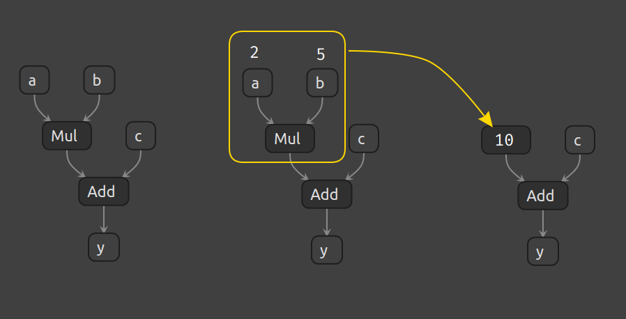
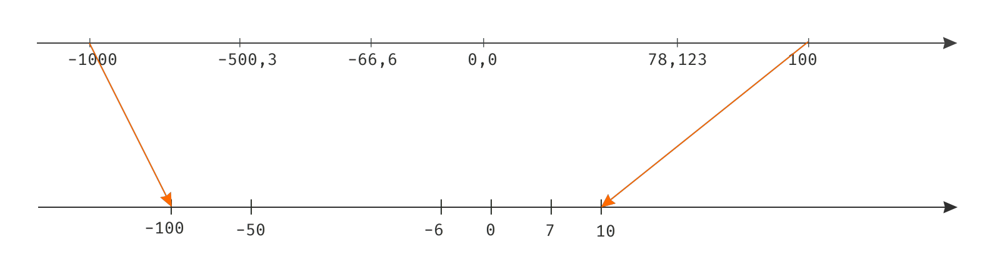
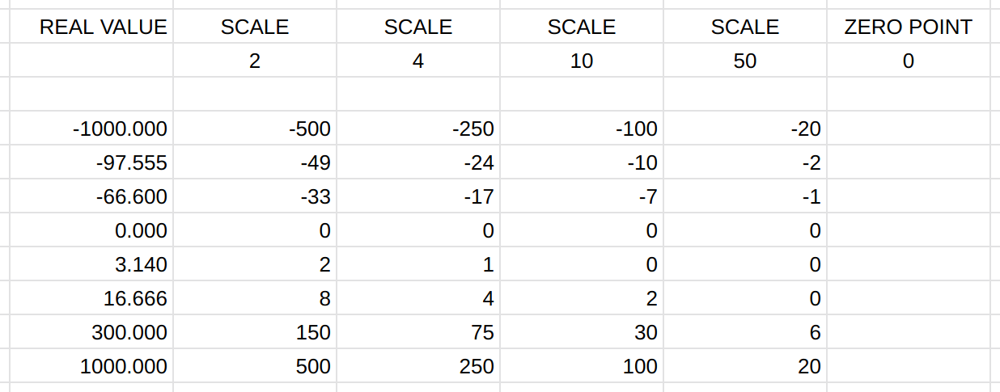
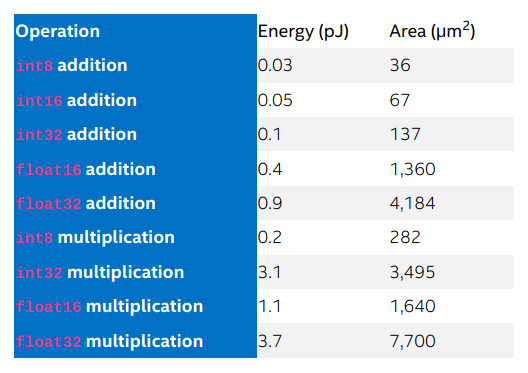
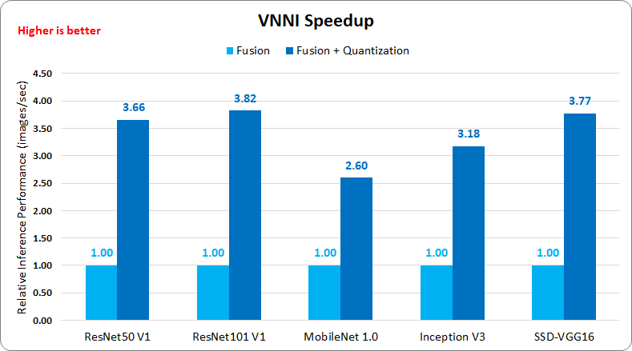
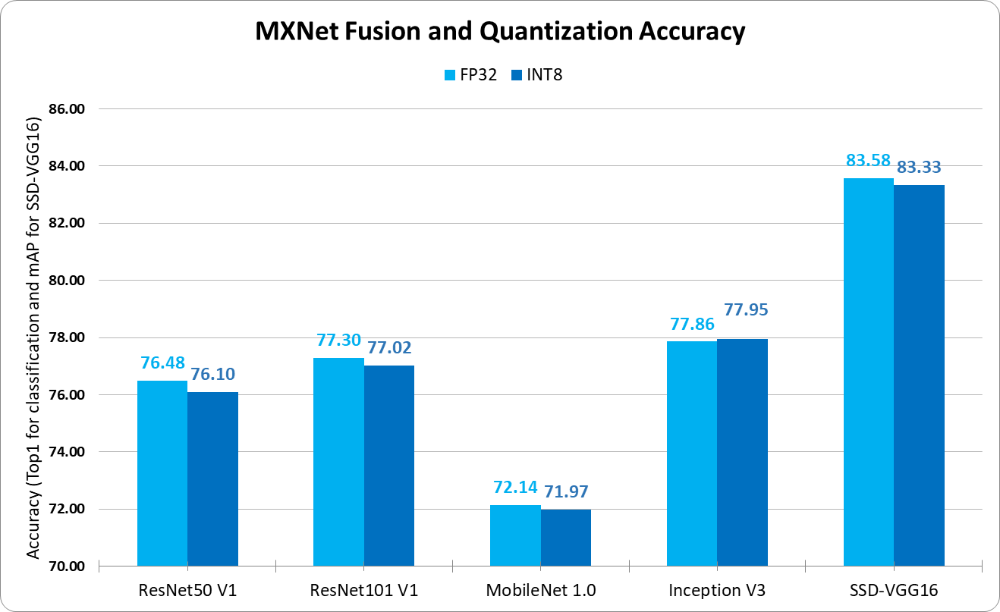

nGraph
Tomasz Dołbniak
3camp #61
Gdańsk 2020
 nGraph
nGraph
ONNX
ONNXRuntime
tomasz-dolbniak tomdol
ngraph.slack.com
od strony technicznej
- biblioteka
 w środku
w środku API w pythonie
API w pythonie
funkcjonalnie
- kompilator modeli/grafów
- optymalizator
- akcelerator - nawet 45x
- runtime dla modeli DL
nGraph- nGraph nie jest frameworkiem
- nie służy do budowania modeli
- C++ & python API
- nGraph - backend / engine
Modele DL

towardsdatascience.com/converting-a-simple-deep-learning-model-from-pytorch-to-tensorflow
Model jako funkcja
->
->
PIES
->
PIES
$$y = f(x)$$
1 => PIES
0 => NIE PIES
Model jako funkcja
->
->
WTF?
->
WTF?
model = aproksymacja funkcji
model
->
funkcja
->
graf
$$f(x) = ax + b$$


lutzroeder/netron
Grafy w DL
"Obliczenie" funkcji - inferencja
Implementacja naiwna
- implementacja operatorów
- sekwencyjne wykonanie operacji
- Nie wykorzystuje możliwości HW
- Jednostki obliczeniowe (rdzenie)
- Wektoryzacja
- Data layout
Kernele
- Jedna z podstawowych optymalizacji
- Ściśle powiązane ze sprzętem
- Architektura & instrukcje
- Typ danych, reprezentacja danych, rank
- DNNL - Intel CPU & GPU
Direct optimization
model -> graf -> kernele -> HW- Apache MXNet
- BigDL
- Caffe Optimized for Intel Architecture
- Chainer
- DeepLearning4J
- Intel Nervana nGraph
- MATLAB DL Toolbox
- Menoh
- Microsoft Cognitive Toolkit (CNTK)
- ONNX Runtime
- OpenVINO(TM) toolkit
- PaddlePaddle
- PyTorch
- Tensorflow
Dlaczego nGraph?
Intel® nGraph™arxiv.org/pdf/1801.08058.pdf
- DO w każdym frameworku
- Coraz więcej HW
- Coraz więcej operacji
- Optymalizacje grafu
nGraph - kompilator
- Inspirowany LLVM
- Ma własną reprezentację grafu (IR)
- IR niezależny or FW i HW
- ngraph::Function
nGraph - kompilator
nGraph - etapy kompilacji
- Wczytanie modelu przez "bridge"
- Skonstruowanie ngraph::Function
- Optymalizacje funkcji/grafu
- Transformacja funkcji
- Optymalizacje związane z HW
- Inferencja
Optymalizacje grafu
- Niezależne od sprzętu
- Analiza grafu - pattern matching
- Zamiana na efektywniejsze rozwiązanie
- "Function passes"
Implicit broadcast
Constant folding
NOP elimination
- Eliminacja "bezsensownych operacji"
- Convert int -> int
- Broadast lub Reshape przy
target_shape == input_shape - Redukcja bez podanej osi
Kwantyzacja
$$q(r) = \lfloor r/s \rfloor + z$$

Typy vs zakresy
- fp32 $$1\times10^{-38} \longleftrightarrow 3\times10^{38}$$
- int8 $$-128 \longleftrightarrow 127$$
- uint8 $$0 \longleftrightarrow 255$$
Kwantyzacja
Energia i powierzchnia silikonu
www.intel.ai/flexpoint-numerical-innovation-underlying-intel-nervana-neural-network-processor/
Kwantyzacja - zalety
- Mniej prądu
- Mniejszy chip
- Mniej pamięci
- Mniejszy model po serializacji
- Szybciej
Kwantyzacja - VNNI
intel.ai/intel-deep-learning-boostAVX512_VNNI
Intel Xeon Scalable Processor Gen 2

me.me/i/project-manager-is-a-person-who-thinks-nine-women-can-8863776
fp32 vs int8
medium.com/apache-mxnet/model-quantization-for-production-level-neural-network-inference-f54462ebba05
fp32 vs int8
medium.com/apache-mxnet/model-quantization-for-production-level-neural-network-inference-f54462ebba05